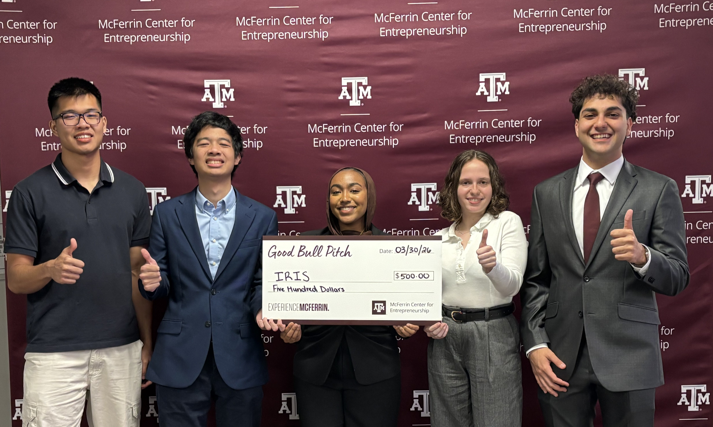
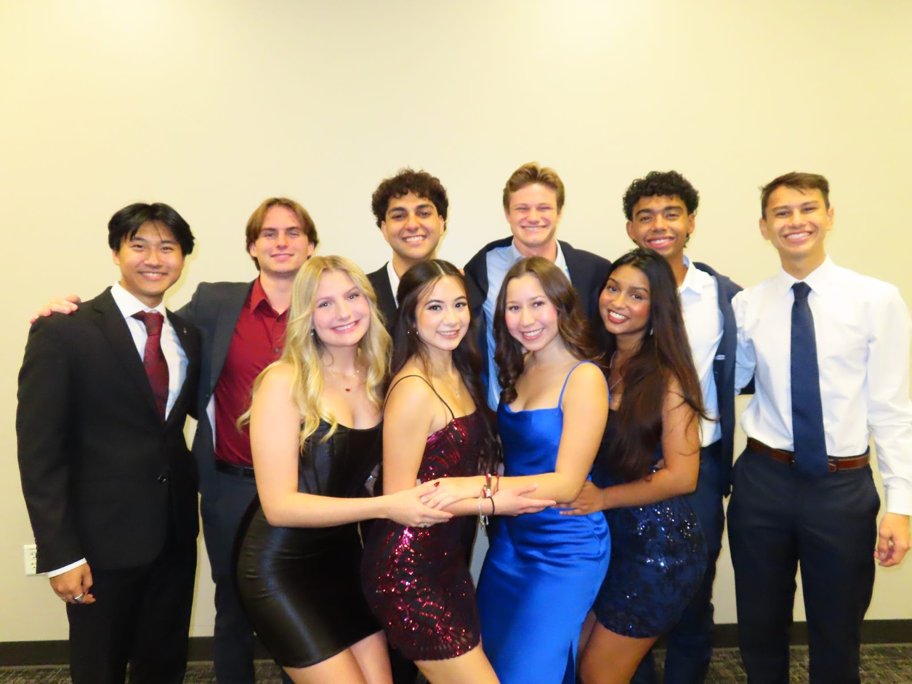
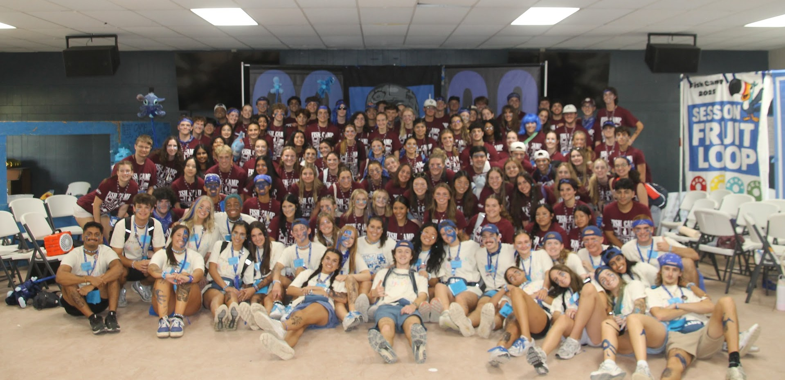
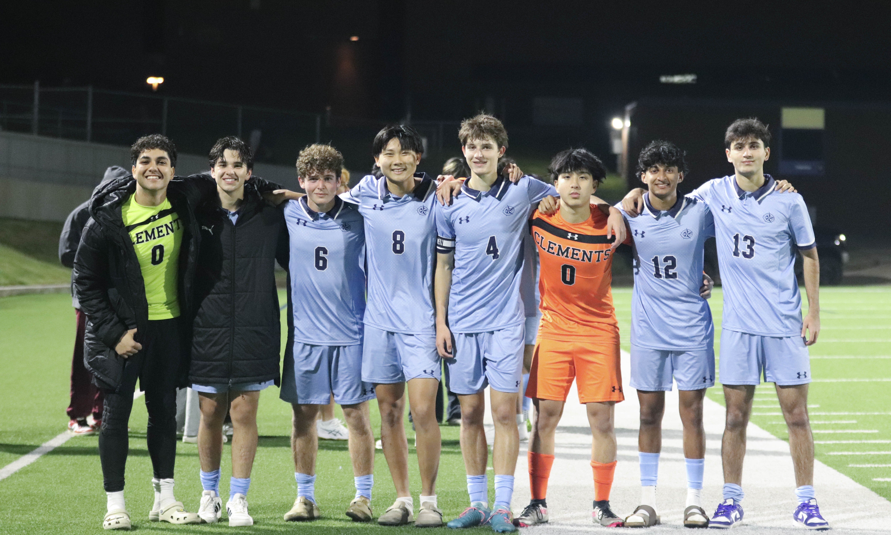
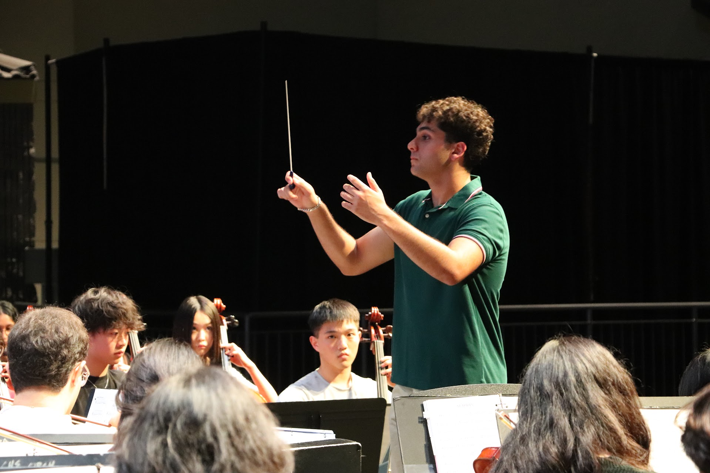
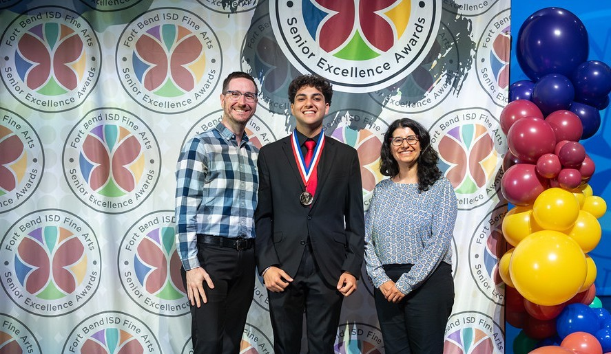
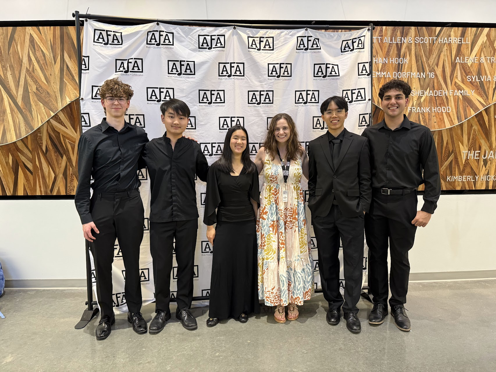
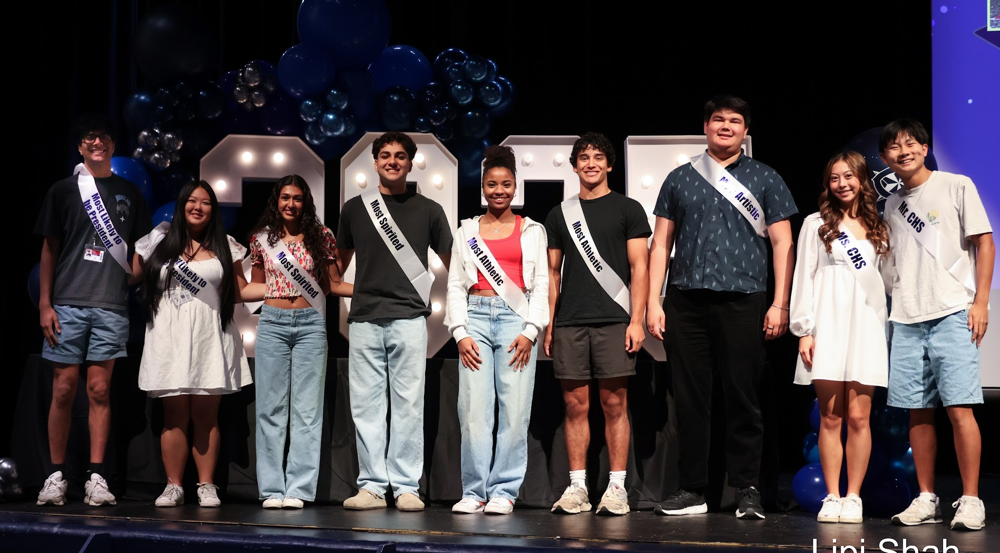
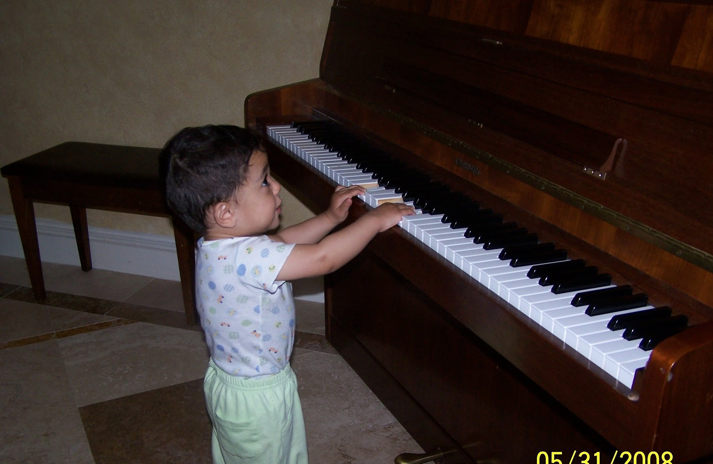

Photos and stories from Ali Rad's journey at Texas A&M — leadership, music, athletics, and life on campus.

This is my team after we pitched IRIS, an autonomous surgical light, at the Good Bull Pitch Competition and won first place, along with a $500 prize to help us keep developing our prototype!

This is from my freshman leadership organization's winter formal, and this photo is with my committee, Internal.

This was me on the final day of Fish Camp, when I officially became an Aggie.

This is me with my soccer teammates after winning our first playoff game in three years!

This is me, an officer of my high school orchestra, conducting one of our school's orchestras. I believe I was conducting Aladdin in this photo!

I was nominated as the embodiment of what it means to be a leader as an orchestra student across my entire school district.

This is my chamber group photo after we performed a very daunting Dvořák Piano Quintet!

During high school, I was nominated for most school spirit and also won prom king.

This is the oldest photo I have of me playing the piano!